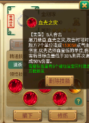
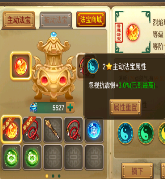
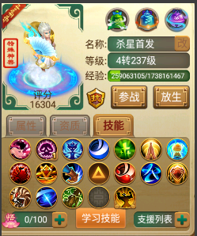
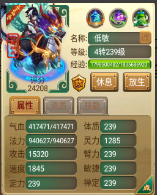
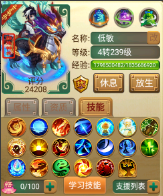
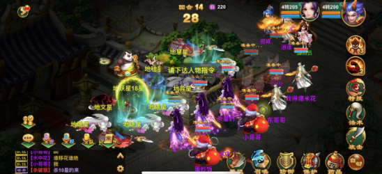

地煞星攻略
1.装备日常消耗篇：角色进去游戏先升级到可以穿仙器阶段 然后商城10组999锁元宝大约3000W左右 炼化装备！任务一套、杀星一套、打架按你们自己需求打造。先囤5到6车终极神兽丹和3车太虚丹和1车超级亲密丹、技能残卷备战宝看自己需求购买。50个组合技能书必买。
2.1.杀星1-10星
2个850敏抽魔 2个800敏龙（或者仙）推荐大力龙 1个750敏混男人
魔炼化为抗混冰满 抗毒伤1.3W以上 物理100以上 反震几率 反震程度100 其他随意。
龙炼化为抗混冰满 抗毒伤1.3W以上 物理100以上 狂暴100 命中100 物理加成
145 强力克。
男人炼化为抗混冰满 抗毒伤1.3W以上 物理100以上 忽视混加强混满。
宠物敏为全部950敏 技能带吉人 绝（没绝带妙手） 道风 （高级闪 隐身）或者组合技能大隐 神出）
2.2杀星：11到15星
1个2000敏女鬼（或者魔） 1个1950魔1个1900敏魔 1个1850敏仙 1850敏混男人
女鬼（魔抽天赋）减抗天赋 炼化为抗混冰满 抗毒伤1.3W以上 物理100以上 反震几率 反震程度100其他随意。
魔抽天赋 炼化为抗混冰满 抗毒伤1.3W以上 物理100以上 反震几率 反震程度100其他随意。
仙化为抗混冰满 抗毒伤1.3W以上 物理100以上 反震几率 反震程度100，强力克
男人混天赋炼化为抗混冰满 抗毒伤1.3W以上 物理100以上 忽视混加强混满。
宠物敏为2500以上 技能带吉人 绝 道风 （高级闪 隐身）或者组合技能大隐 神出）成仁取义 当头棒喝 春回大地 子虚 神兽技能为涅槃
（法宝必须5个角色攻击法宝）炼化为高灵动 敏捷在1800以上 高伤害。技能为这个


（主动法宝自己对应角色炼化忽视）
2.3.杀星：16到17星
1个2250敏女鬼 1个2150敏魔1个2050敏魔 1个1950敏魔 1850敏混男人
女鬼减抗天赋 炼化为抗混冰满 抗毒伤1.3W以上 物理100以上 反震几率 反震程度100其他随意。
魔抽天赋 炼化为抗混冰满 抗毒伤1.3W以上 物理100以上 反震几率 反震程度100其他随意。
男人混天赋炼化为抗混冰满 抗毒伤1.3W以上 物理100以上 忽视混加强混满。
（法宝必须5个角色攻击法宝）炼化为高灵动 敏捷在1800以上 高伤害。
杀法为：自己选怪杀！控制多 敏火力多！回血鬼 跑！！！ 不掉经验
首发：最好为踏云（能移花 减抗）

鬼减抗 魔抽（16星女鬼减抗了魔能抽4个 17星为2个）
男人控制 5个踏云看情况移花或减抗、拉血。
多准备兔子或2当家 减速春回魔！因为春回魔是抽不到的！必须减速了才能抽到。还多准备2小姐减抗（必须2小姐白骨精不行）减速减抗会抽的更多 到最后用法墨鳞情面换死！


2.4. 杀星：18到19星
1个2250敏龙 1个2150敏龙 1个2050敏魔 1个1900敏魂人 1850敏混男人
1号龙召唤师 炼化为抗混冰满 抗毒伤1.3W以上 物理100以上 反震几率 反震程度100其他随意。
2号龙回血天赋 炼化为抗混冰满 抗毒伤1.3W以上 物理100以上 反震几率 反震程度100其他随意。
3号魔牛天赋炼化为抗混冰满 抗毒伤1.3W以上 物理100以上。其他随意 。
4、5号男人混天赋炼化为抗混冰满 抗毒伤1.3W以上 物理100以上 忽视混加强混满。
杀法为：（必须有大力熊）1号龙为召唤师2号龙准备好7到8只1950敏女侠或踏云！3号牛或叫 4、5号男人混大力熊
看好情况 2号龙叫出女侠或踏云 下回2号龙点自己的女侠或踏云回血 3号魔点女侠或踏云牛 然后移花给大力龙 然后男人混。
所有宠物内丹必须带万佛 凌波

2.5. 星怪讲解图
回血鬼
敏遗忘鬼
敏仙
敏仙
敏春回魔（当控制超3个就会春回一般情况下抽或速）
敏女人第一回合有技能会冰，第2回合后只会毒或砍（没速敏在3500左右）
敏女人只会毒（没速敏在3500左右）
只会盘抽敏女魔
低敏仙（没威胁））
低敏仙（没威胁）
只会抽的敏魔
大力1800左右敏连击熊（16-17星反震死他）
大力1800左右敏秒龙（16-17星反震死他）
敏男人第一回合可能会出冰法后面只会混（没速大约在4000敏左右）
敏男人只会混法（没速大约3500敏左右）
低敏秒鬼（没威胁）
主怪（无视他杀不了 每个回合都放眼）
中敏秒鬼（没速大约3500）